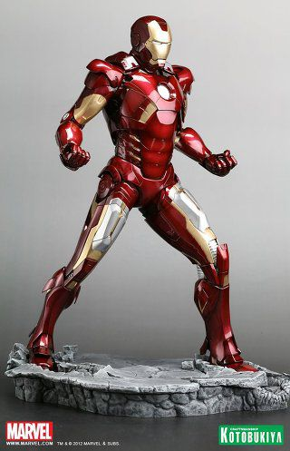

|  | 상품가격 | 10,800,000,000원 |
|---|---|---|
| 원산지 | 국내 | |
| Mk.7 아머 | 배송 | 무료 평균배송일 5.0일 |
| 후기 |   | |
헬리캐리어 습격 이후 거의 박살난 Mk.6를 대신하여 스타크 타워로 돌아가 테스트도 안끝낸 상태에서 착용한다.
토니가 양 손목에 팔찌를 착용한 채 자비스를 호출하면
아머가 토니가 있는 장소로 날아와 팔찌의 위치에서 전신을 스캔하여 자동으로 장착된다.
Mk.6에 비해 레이저가 강화되었고 등과 가슴에 추가적인 제트팩을 붙이고 비행을 하는 모습이 나온다.
아이언맨3에서 어린 아이에게 싸인을 해주다가 몸의 이상을 느끼고 급하게 착용한 수트로 잠깐 등장하기도 한다.